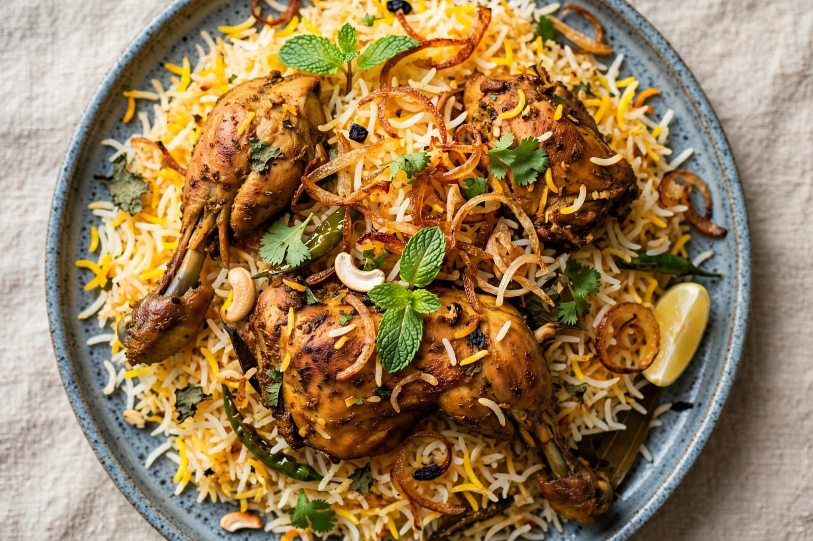
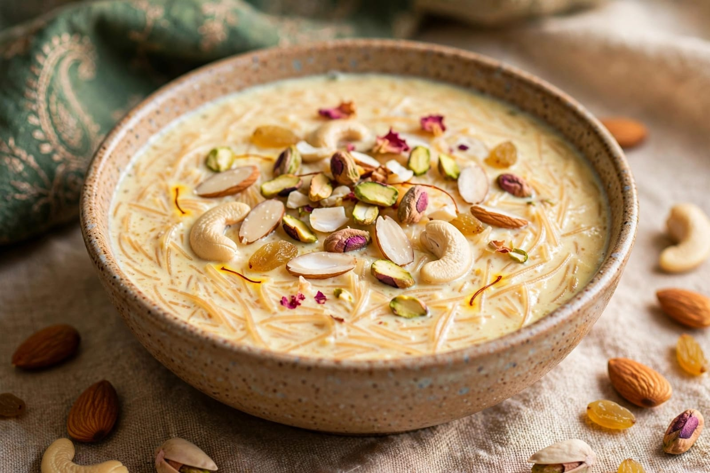
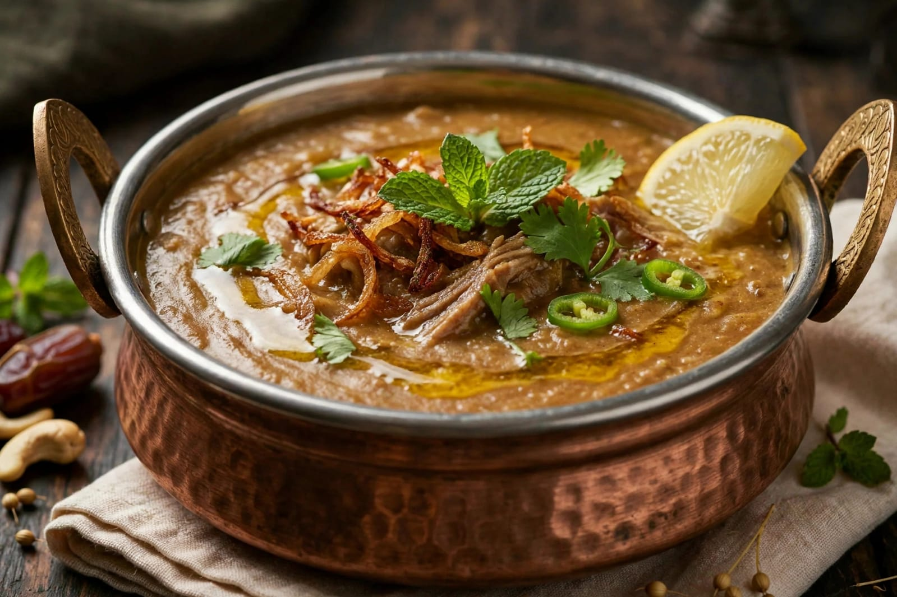

About Eid Milad
Eid Milad is an important Islamic occasion observed by many Muslims. It commemorates the birth of Prophet Muhammad. The occasion is also known as Mawlid or Milad-un-Nabi. Muslims observe the occasion with devotion and respect. The date is observed according to the Islamic lunar calendar. The date therefore changes each year in the Gregorian calendar. Many people attend special prayers and religious gatherings. Mosques may be decorated for the occasion. Homes may also be cleaned and decorated. People gather to remember the life of Prophet Muhammad. Religious scholars may give talks about his life. People listen to stories about his teachings. His teachings emphasize kindness and good character. Peace and compassion are important themes of the occasion. Muslims are encouraged to help others. Charity and generosity are valued during the occasion. People may give food to those who need it. Families and communities come together. People exchange greetings with each other. Religious programs may be organized in mosques. Quran recitation may be included in gatherings. People may recite praises and prayers. Children may participate in educational programs. Special gatherings can be held in community halls. Processions are organized in some regions. The style of celebration varies among Muslim communities. Some communities observe the occasion quietly. Others organize larger religious programs. People wear clean or traditional clothes. Families prepare special meals at home. Traditional sweets may be prepared. Food is shared with relatives and neighbours. People visit friends and family members. The occasion promotes brotherhood and unity. It encourages people to follow good values. Kindness and respect are important parts of the message. Helping the poor is considered a noble act. Eid Milad is observed with faith and devotion. The occasion has religious and cultural importance.
Eid Milad is observed in many countries around the world. It is observed by Muslim communities in India. Different regions have their own customs and traditions. Religious gatherings are commonly held on this occasion. Mosques may arrange special programs. Scholars explain important events from the Prophet's life. People learn about his character and teachings. Stories about kindness and compassion are shared. People are encouraged to treat others with respect. Families may spend time together during the occasion. Relatives and friends visit one another. Greetings are exchanged among community members. People may distribute sweets to neighbours. Food may be distributed among the community. Charity activities may be organized. People may support poor and needy families. Some communities arrange free meals. Religious lectures may be given in local languages. Quran recitation is an important religious activity. Prayers are offered during gatherings. Nasheeds may be recited at some events. People decorate streets and mosques in some areas. Green decorations are commonly seen in some celebrations. Lights may be used to decorate buildings. Children may take part in cultural programs. Educational competitions may be organized. People learn about Islamic history and values. The occasion encourages peaceful relationships. It promotes unity among community members. People remember the importance of honesty. Kindness is emphasized in religious teachings. Helping neighbours is encouraged. Respect for parents and elders is valued. Caring for the poor is an important message. People try to practice good manners. The occasion creates a peaceful atmosphere. Families share meals together. People exchange good wishes and prayers. Eid Milad strengthens community relationships. It reminds people of important moral values.
Eid Milad traditions can differ from one place to another. Some communities organize religious processions. Some communities prefer prayer gatherings in mosques. Religious speeches are held in many places. People listen to stories about the Prophet's life. Special prayers may be offered during gatherings. Families prepare traditional food for guests. Sweets are commonly shared with others. Food sharing promotes friendship and generosity. People may donate money or food to charitable causes. Children learn about kindness and good behaviour. Elders teach younger people about religious traditions. Communities work together to organize events. People visit relatives and neighbours. The occasion brings people together peacefully. It encourages compassion and respect. It reminds people to help those in need. Eid Milad is an important religious and cultural occasion. It is observed with faith, peace and devotion.
Special Foods

Biryani
Biryani is a popular rice dish often prepared for special occasions.

Sheer Khurma
Sheer Khurma is a traditional sweet milk dish prepared with dates and vermicelli.

Haleem
Haleem is a traditional dish made with grains, lentils and spices.